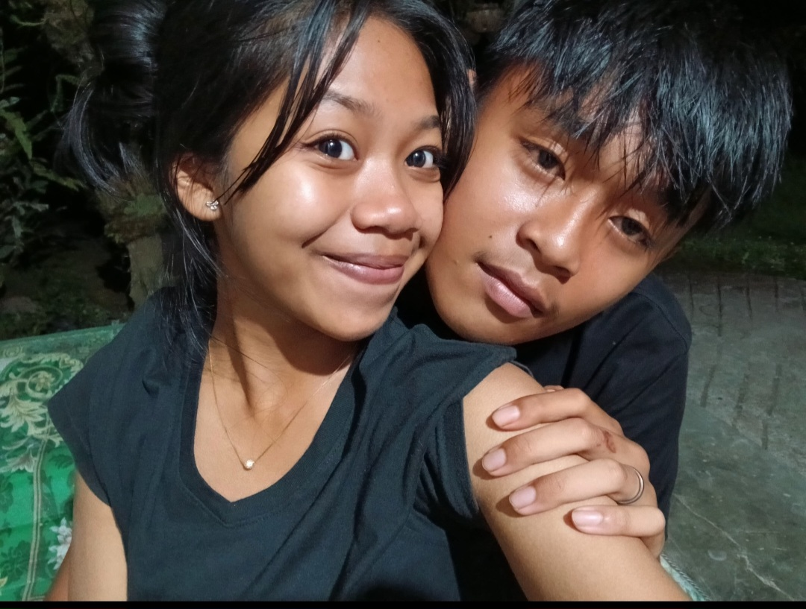

Udah hampir 2 tahun kita bareng, dan sekarang kita beda sekolah. Tapi jujur aja, rasanya kamu tetep deket…
Kadang aku kangen sih—kangen jalan bareng, kangen liat kamu langsung, kangen momen kecil yang dulu sering kita lewatin bareng. Tapi aku juga ngerti, kita lagi di fase masing-masing. Dan aku bangga sama kamu.
Aku te bukan orang paling romantis, tapi aku sayang kamu, dengan cara aku sendiri. Cara yang mungkin aneh kadang, tapi tulus.
Budya, makasih ya, udah nemenin aku sejauh ini. Nanti pas tamat, kita gas jalan-jalan lagi ya—gatau ke mana, yang penting bareng kamu.
Dari aku yang sayang kamu,
nanaw
